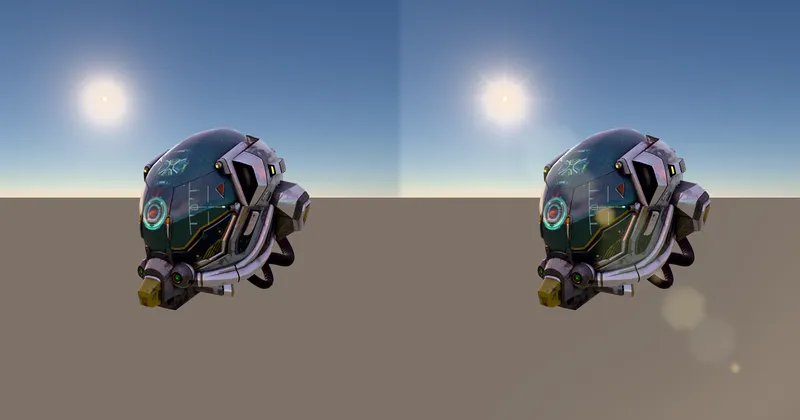

PostEffect BuiltInEffect Camera & Lens
Lens Flare (SkyAtmosphere) - RedGPU WebGPU Example
Hybrid Lens Flare with sun occlusion, bokeh ghosts, and streaks in SkyAtmosphere.
대기 산란 태양광과 HDR 하이라이트 기반의 하이브리드 렌즈 플레어 예제입니다.

PostEffect BuiltInEffect Camera & Lens
Hybrid Lens Flare with sun occlusion, bokeh ghosts, and streaks in SkyAtmosphere.
대기 산란 태양광과 HDR 하이라이트 기반의 하이브리드 렌즈 플레어 예제입니다.
